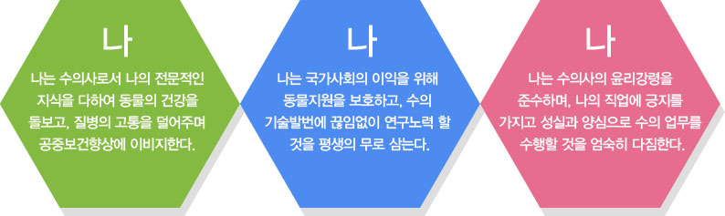

윤리강령
서울특별시 수의사회 윤리강령입니다.
서울시수의사회 홈페이지가 수의사는 물론 동물을 사랑하는 모든 분들에게 유익한 정보를 제공하고 바람직한 반려동물 문화의 요람이 되고자 새롭게 개편되었습니다.

서울특별시수의사회 윤리강령
동물을 질병으로부터 보호하고 가축의 건강과 성장을 위하여 노력하고 기여하는 종래의 수의업무 영역이 현대에 이르러서는 반려동물과 실험동물을 비롯한 모든 동물자원의 건강관리와 보존을 통한 건전한 생활문화의 선도와 축산물, 식품의 안전성 확보를 비롯한 인류의 공중보건 향상 등의 분야로 확대되면서 인류사회의 발전과 동물의 보존에 이바지하여야 할 수의사의 책무와 역할은 시대의 소명이다. 우리는 인류에 기여할 무한한 책임의식을 바탕으로 자긍심을 높이고 사회적으로 이를 승화시키기 위하여 끊임없이 사회적인 노력과 학문적인 노력을 함께 기울일 것이며, 수의학의 전문기술 개발과 기술연마, 사회적인 참여를 통하여 궁극적으로 인류의 정신적, 육체적 건강을 증진시키고 동물에 대한 인류의 사랑을 실천할 수 있도록 힘쓴다. 이에 우리는 서로 뜻을 모아 수의사로서 도덕적으로 준수하여야 할 사항을 정하고 인류사회에 대한 사명을 다하기 위해 노력할 것을 다짐한다.
서울특별시수의사회 윤리강령
1. 사회생활
수의사는 자신이 습득한 전공지식을 기반으로 전문적인 임무에 종사하면서 보건관계업무의 종사자들과 제휴하며 공중보건지식을 계몽 발전시키는 이외에 문화, 경제, 정치 등의 분야에도 널리 진출하여 선량한 국민으로서 사회생활의 향상에 기여하여야 한다.
2. 의무
수의사는 동물의 진료 및 질병예방업무를 담당하면서 반려동물의 건강을 증진시켜 인류의 정신적, 육체적 건강을 향상시킴과 동시에 산업동물에 대한 가축위생을 향상시켜 축산물의 생산성과 안전성을 확보함으로써 안전한 식량생산에 공헌하는
동시 인간과 동물의 공중보건향상에 기여하여야 할 무한한 의무가 있다.
3. 책임
말 못하는 동물의 진료는 물론 인류의 건강과 밀접한 공중보건업무를 최선을 다하여 수행하여야 하며 이와 더불어 수의업을 일반인이 올바르게 이해 할 수 있도록 수의사의 활동을 널리 사회에 알리는 동시에 비전문가에 의한 수의업무행위가 인류와
동물에 크나큰 불이익을 초래한다는 것을 사회에 인식시키는 것이 수의사로서의 사회에 대한 책임이다.
수의사 회원간의 상부상조의 책임
4. 단결
수의사는 수의사회 회원으로서의 긍지를 갖고, 상호친목을 두텁게 하고 서로 격려하며 단결함으로써 수의업의 발전을 도모하여 사회에 공헌하여야 한다.
5. 행동
수의사 개개인이 받는 존경이나 비난은 곧 수의사 전체에 대한 사회의 신임 또는 불신으로 나타남을 인식하고, 언제 어떠한 일을 할 때마다 공인으로서의 수의사임을 염두에 두고 행동을 하여야 한다.
6. 비방금지
동료 수의사를 비방하는 것은 본인 스스로 윤리도덕관이 부족함을 사회에 알리는 것이 된다. 그러므로 수의사 동업자간의 비방은 엄격히 삼가야 한다.
진료업무에 있어서의 책임과 의무
7. 환축에 대한 책임
진료는 동물의 건강상태를 개선하고 축주의 신뢰를 높이도록 올바른 이론에 따라 과학적인 설비를 응용하여 실시하여야 한다. 진료동물의 고통을 덜어주고 투약을 적절히 하여야 하며 인도적인 보호 및 간호방법을 축주에게 충분히 설명하여 환축이 올바른 의료행위를 받을 수 있도록 하여야 한다.
8. 주치관의 존중
주치 수의사에게 진료를 받고 있는 환축에 대하여 제3자를 중간에 개입시켜 축주 및 주치수의사를 동요시키거나 도중에 자신이 직접 개입하여 진료를 실시하는 일이 있어서는 안된다.
9. 대리진료시 도의
주치수의사의 사정에 의하여 대리진료를 의뢰 받을 경우에는 주치수의사의 학식과 능력에 관하여 축주에게 다소라도 의심을 주는 언동을 고의로 하여서는 안된다.
10. 응급진료의 도의
다른 수의사가 담당하는 환축의 응급치료를 의뢰 받았을 경우에는 즉시 응하여 필요로 하는 응급처치를 실시한 다음, 바로 이를 주치의에게 통지하여야 한다, 축주측의 사정으로 동시에 2인 이상의 수의사가 초청되었을 경우는 축주가 희망하는 사람이
주치의로 결정되나 그렇지 아니한 경우는 먼저 도착한 사람이 진료에 임하는 것을 원칙으로 한다. 다만, 전문성이 요구되는 질병사례에 있어서는 그 중 전문가를 주치의로 추천하는 것이 축주에 대한 친절이라 할 수 있다.
11. 정당한 보수
진료비는 기술과 투약에 대한 정당한 보수로서 사회통념상 타당하다고 인정되는 수준으로 정하여 진다. 그러므로 고의로 이를 낮추어 받거나 또는 부당하게 높은 진료비를 청구하는 것은 수의사의 윤리에 어긋나는 일이다.
12. 성실한 입증
수의사는 전문가의 입장에서 동물의 건강 또는 검사증명서 등을 발행하거나 증언을 요구받을 때가 많다. 이 때에는 법을 준수하고, 양심이 명하는 바에 따라 작성 또는 발언하여야 한다.
13. 반려동물, 산업동물, 기타동물 또는 축산물 등에 매매에 있어서
반려동물, 산업동물, 기타동물 또는 축산물 등의 매매에 있어서 감정을 의뢰 받았을 때 또는 기타 전문사항에 관하여 상담을 받은 경우에는 공정한 입장에서 이에 응하여야 하며 적어도 부정한 거래를 조장하거나 양심에 어긋나는 의견을 진술하여서는 안된다.
14. 품위있는 광고
광고는 최대한의 품위를 갖추어서 수의업의 활동을 올바르게 널리 사회에 알린다는 차원에서 하도록 한다. 수의업의 권위를 손상시키거나 타인에게 피해나 혼동을 일으키는 광고는 엄하게 배척하여야 한다.
15. 적절한 방역
가축전염병의 발생이 인정되거나 또는 예방이 필요하다고 인정되었을 때는 신속히 가축전염병예방법에서 정한 규정대로 처리를 하여 그 방제에 노력함은 물론, 예방접종이나 일반치료, 공중보건관련 업무에 있어서도 항시 소독 등을 시행하여 질병 원인체의 전파방지에 최선을 다하여야 한다.
비진료업무에 있어서의 책임과 의무
16. 학술 진흥 향상의 책임
수의사는 본인의 전문분야에 대한 개개인의 경험이나 축적된 기술 또는 연구에 의하여 얻어진 결과 등의 업적을 스스로 널리 공개하여 수의업 전체의 수준향상에 기여함으로써 수의업 종사자로서의 숭고한 책임을 다하여야 한다.
17. 교육, 연구에 종사하는 수의사의 책임
수의교육 및 연구업무에 종사하는 수의사는 수의임상이나, 수의공중보건을 담당하는 수의사의 훌륭한 고문이 되어야 하며, 좀 더 나은 진료를 위한 진단, 치료, 검사 등의 협력을 의뢰 받았을 경우에는 수의업의 윤리를 준수하여 이를 성실하게 수행하여야 한다.
18. 공무원 및 수의관련 단체 수의사의 도의
공무원 및 수의관련 단체에 속하는 수의사는 무료진료의 경우라 할지라도 자기의 직무 범위를 넘어서 동물진료나 검사업무를 행하여 일반수의업의 윤리를 어지럽게 하여서는 안된다.
19. 수의공중 보건에 종사하는 수의사의 책임
인류가 섭취하는 축산물, 어패류 등의 식품 및 가공식품의 안전성을 확보하는 것은 인류의 정신적, 육체적 건강을 유지하는데 필수적인 요소이므로 축산물의 생산에서 유통에 이르는 수의공중보건 전과정에 종사하는 수의사는 자신의 전문성을 충분히 발휘하여 각 단계에서 엄격한 검사를 수행하여야 한다.
수의업무를 수호하는 책임
20. 외부로부터 수의 고유 업무에 대한 침해
수의사는 각자가 종사하는 업무를 성심껏 수행하여 수의업무를 무한히 발전시켜 인류생활에 공헌할 수 있는 자유를 가지고 있는 동시에 이 직업에 종사할 자격이 없는 자로부터 이직업의 권익을 침해받는 일이 없도록 수호하여야 할 의무도 있다.
21. 올바르지 못한 수의사를 선도하는 의무
동료 수의사가 올바르지 못한 진료행위를 하거나 기타 수의업의 신의를 손상시키는 행위를 하는 것을 발견하였을 때는 다른 분야 사람으로부터 비난을 받기 이전에 수의사들 간에 스스로 시정토록 노력하여야 한다.